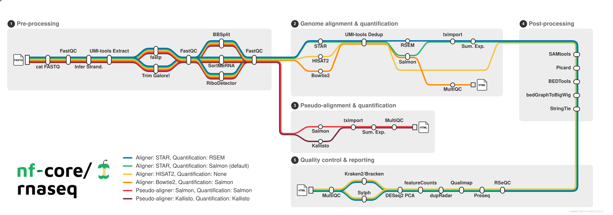

Differential Gene Expression (Bulk RNAseq)
Workshop: ~90 minutes hands-on · This page stays open for independent study and office-hours follow-up.
Learning Objectives
By the end of this workshop you will be able to:
- Describe the structure of a bulk RNA-seq count matrix
- Explain what DESeq2 does and why raw counts are not directly comparable across samples
- Build a
DESeqDataSetfrom a count matrix and design table - Filter low-count genes, run
DESeq(), and extract results - Interpret
log2FoldChange,padj, andbaseMean - Build a PCA plot and a volcano plot to communicate differential expression results
Launch Your Workspace
You need a free GitHub account to use this workshop
This workshop runs in GitHub Codespaces — a cloud environment that requires a GitHub account. If you do not have one, create one for free at github.com before the session. No paid plan is required.
GitHub Free quota (per account, per month):
- 120 core-hours of compute — equivalent to 60 hours of run time on a standard 2-core Codespace
- 15 GB of storage
This is enough for workshops and occasional use, but is not intended to replace a local development environment for everyday work.
This workshop runs entirely in a cloud environment — no software installation required. One click opens a pre-configured RStudio session with all packages installed and the workshop data ready to use.
First launch takes ~10–15 minutes
The first time the Codespace builds, GitHub installs Bioconductor packages including DESeq2 — this takes longer than the June workshops. Start the build, then read through the background sections below while it runs. Subsequent launches are instant.
What you'll see:
- GitHub opens a VS Code editor in your browser — this is the Codespace container. You do not need to use VS Code for this workshop.
- A browser tab for RStudio will open automatically at port 8787. No login is required.
- If RStudio does not open automatically: in VS Code, click the Ports tab at the bottom panel, find port
8787, and click the globe icon to open it in a new tab.
Keep your Codespace awake — and stop it when you're done
Codespaces automatically pause after 30 minutes of inactivity, but suspended Codespaces still consume your monthly storage quota. Closing the browser tab does not stop the Codespace.
At the start of the workshop, open a new terminal tab in VS Code (Terminal → New Terminal) and run this keepalive loop:
while true; do echo "keepalive $(date)"; sleep 300; done
This pings the Codespace every 5 minutes to prevent it from suspending during the session.
How to stop your Codespace when you're done
- Switch to the VS Code terminal tab where the
keepaliveloop is running. - Press Ctrl+C to stop it.
- Go to github.com/codespaces, find your Codespace, click
···, and select Stop codespace.
Closing the browser tab is not enough — a suspended Codespace still counts against your monthly storage quota.
Getting oriented in RStudio:
Once RStudio is open, get the workshop files ready:
- In the Files pane (bottom-right), you will see the workshop directory. Click
bulkDGE.Rprojto open the project — this sets your working directory correctly so data paths in the script will resolve. - Open
workshop.Rmd(File → Open File, or click it in the Files pane). This is the file you will work through during the workshop. - Each grey block is a code chunk. Run a chunk by clicking the ▶ Run Current Chunk button (green play icon at the top-right of the chunk), or press Ctrl+Shift+Enter (Windows/Linux) / Cmd+Shift+Return (Mac).
Save your work
Press Ctrl+S / Cmd+S often. At the end of the session, use the Files pane → More → Export to download your completed notebook to your computer before closing the Codespace.
What Is Bulk RNAseq?
RNA sequencing measures gene expression by converting RNA molecules into DNA, sequencing those fragments, and counting how many reads came from each gene. The result is a table of counts: one row per gene, one column per sample.
| wt_veh1 | wt_veh2 | wt_veh3 | wt_cort1 | wt_cort2 | wt_cort3 | |
|---|---|---|---|---|---|---|
| gene A | 432 | 398 | 521 | 1104 | 978 | 1231 |
| gene B | 87 | 102 | 93 | 81 | 96 | 88 |
| gene C | 0 | 0 | 2 | 0 | 1 | 0 |
Each number is a count of sequencing reads that mapped to that gene in that sample. Higher counts indicate higher expression.
What raw counts cannot tell you directly
Two samples with the same read counts for a gene are not necessarily expressing it at the same level — libraries can differ in total depth (some samples have 20 million reads, others 40 million). DESeq2 estimates size factors that account for these library-size differences before any comparison is made.
Counts also have a statistical property that makes them difficult to analyze with standard tests: the variance increases with the mean (overdispersion). DESeq2 models this with a negative binomial distribution fitted separately for each gene, giving it proper statistical power across both lowly and highly expressed genes.
From FASTQ to Count Matrix
Before you received the count matrix for this workshop, the raw data went through an upstream pipeline. This section shows what that pipeline does, what it produces, and why we hand only three of its ~245 output files to DESeq2.
Want to go deeper on pipelines?
This section is a preview. The Computational Workflows workshop covers Nextflow, nf-core, and running pipelines on HPC/cloud infrastructure in full detail — including how to write your own pipeline and interpret every parameter in a config file.
nf-core/rnaseq
nf-core/rnaseq is a community-maintained, peer-reviewed Nextflow pipeline that takes paired-end FASTQ files and a reference genome and produces analysis-ready count matrices. Each step in the pipeline is a separate tool; the pipeline wires them together, parallelizes across samples, and logs everything.

Reading left to right, the pipeline:
- Validates and lints input FASTQ files (
fq_lint) - Assesses raw read quality per sample (
FastQC) - Trims adapters and low-quality bases (
TrimGalore) - Re-assesses quality after trimming (
FastQCagain) - Aligns reads to the genome (
STAR) - Quantifies transcript abundance using the alignment + a pseudo-alignment step (
Salmon) - Counts reads per gene as an alternative method (
featureCounts) - Assembles transcripts from the alignments (
StringTie) - Runs a battery of RNA-seq QC checks (duplication rate, junction saturation, strandedness, insert size, etc.) (
RSeQC,Qualimap,dupradar,Picard) - Aggregates all QC reports into one HTML summary (
MultiQC) - Merges Salmon quantifications across samples into a single count matrix (
tximeta)
What the command looked like
The actual Nextflow command used to process this dataset:
nextflow run nf-core/rnaseq \
-r 3.23.0 \
--input samplesheet.csv \
--outdir nextflowOutput/jcoffman_001/ \
-resume
With genome parameters:
{
"fasta": "Danio_rerio.GRCz11.dna_sm.primary_assembly.fa.gz",
"gtf": "release-115/Danio_rerio.GRCz11.115.gtf.gz"
}
And the samplesheet linking each sample name to its FASTQ files:
sample,fastq_1,fastq_2,strandedness
wt_veh1_jcoffman001,SL94881_R1.fastq.gz,SL94881_R2.fastq.gz,auto
wt_veh2_jcoffman001,SL94882_R1.fastq.gz,SL94882_R2.fastq.gz,auto
wt_veh3_jcoffman001,SL94886_R1.fastq.gz,SL94886_R2.fastq.gz,auto
wt_cort1_jcoffman001,SL94883_R1.fastq.gz,SL94883_R2.fastq.gz,auto
wt_cort2_jcoffman001,SL94884_R1.fastq.gz,SL94884_R2.fastq.gz,auto
wt_cort3_jcoffman001,SL94885_R1.fastq.gz,SL94885_R2.fastq.gz,auto
Why not do this hands-on?
These pipelines can take anywhere betwen 5 to 12+ hours of compute time, requires cloud computing resources, and access to reference genome files totaling ~15 GB. For this workshop, it has already been run for you. The Computational Workflows workshop is where you will run it yourself.
The full output tree
The pipeline produced 245 files across 73 directories. The annotated tree below collapses the per-sample repetition to show structure:
nf-core/rnaseq output/
│
├── fastqc/ # Read quality reports (FastQC)
│ ├── raw/ # Before trimming — 4 files × 6 samples
│ └── trim/ # After trimming — 4 files × 6 samples
│
├── trimgalore/ # Adapter trimming reports (TrimGalore)
│ └── [sample]_trimming_report.txt ×12 (one per read file per sample)
│
├── fq_lint/ # FASTQ format validation logs
│ ├── raw/ (×6 samples)
│ └── trimmed/ (×6 samples)
│
├── multiqc/
│ └── star_salmon/
│ └── multiqc_report.html ★ aggregated QC — first thing to review
│
├── pipeline_info/ # Pipeline execution metadata
│ ├── execution_report.html # Resource usage per process
│ ├── execution_timeline.html # Gantt chart of process scheduling
│ ├── execution_trace.txt # Per-task CPU/memory/wall-time
│ ├── pipeline_dag.html # Visual workflow graph
│ └── params.json # Record of all parameters used
│
└── star_salmon/ # Main alignment + quantification outputs
│
├── [sample]/ # Per-sample Salmon directories (×6)
│ ├── quant.sf # Transcript-level counts + TPM
│ └── quant.genes.sf # Gene-level counts + TPM
│
├── [sample].markdup.sorted.bam # Sorted, duplicate-marked alignments (×6)
│
├── salmon.merged.gene_counts.tsv ★ DESeq2 input — raw counts
├── salmon.merged.gene_counts_scaled.tsv # Library-size scaled counts
├── salmon.merged.gene_counts_length_scaled.tsv # Length + size scaled
├── salmon.merged.gene_tpm.tsv # TPM (normalized expression)
├── salmon.merged.gene_lengths.tsv # Effective gene lengths
├── salmon.merged.transcript_counts.tsv # Transcript-level raw counts
├── salmon.merged.transcript_tpm.tsv # Transcript-level TPM
├── salmon.merged.gene.SummarizedExperiment.rds # R object
├── salmon.merged.transcript.SummarizedExperiment.rds
├── salmon.merged.tx2gene.tsv ★ transcript → gene ID map
│
├── bigwig/ # Genome coverage tracks for IGV/browser (×12)
├── featurecounts/ # Alternative count method per sample (×6)
├── stringtie/ # Transcript assembly per sample (×6)
│
├── deseq2_qc/ # Automated pipeline PCA and clustering
├── dupradar/ # Duplication rate vs expression level
├── qualimap/ # BAM-level QC statistics (×6)
├── rseqc/ # RNA-seq QC: junction saturation, strand, etc.
├── picard_metrics/ # Duplicate marking statistics (×6)
├── samtools_stats/ # Alignment statistics (×6)
└── log/ # STAR alignment logs per sample (×6)
Why we use only three of these files
The pipeline gives you far more than you need for a standard differential expression analysis. Here is what we take and why each choice is deliberate:
salmon.merged.gene_counts.tsv — the count matrix we use for DESeq2
This file contains the raw, unmodified count estimates from Salmon aggregated to the gene level. Raw counts are what DESeq2 requires — its own normalization (size factors) corrects for library depth, and its negative binomial model accounts for variance. We deliberately skip the alternatives:
_tpm.tsv— TPM has already been normalized for library size and gene length. Feeding pre-normalized values into DESeq2 corrupts its model._scaled.tsvand_length_scaled.tsv— these are useful with other tools (edgeR, limma-voom) but not needed here.featurecounts/— Salmon's pseudo-alignment handles multi-mapping reads and quantification uncertainty more accurately than HTSeq-style counting; both are valid but Salmon is the better choice for this pipeline.- Per-sample
quant.sffiles — the merged matrix is identical in content and much easier to load.
salmon.merged.tx2gene.tsv — transcript-to-gene mapping
Salmon quantifies at the transcript level internally. This file is how the pipeline knows to aggregate ENSDART00000123456 → gene ENSDARG00000001234 → gene name klf9. It is the lookup table that gives us readable gene names in the results table.
multiqc/star_salmon/multiqc_report.html — the QC gate
Before doing any statistics, you must verify the data quality. MultiQC aggregates the output of FastQC, TrimGalore, STAR, Salmon, RSeQC, Picard, and Qualimap into a single scrollable HTML report. Red flags to look for: low alignment rates (<70%), high duplication rates (>50% for non-amplified RNA-seq), inconsistent library sizes across samples, unexpected strand orientation. If something looks wrong in MultiQC, you need to resolve it before the counts are trustworthy.
What we skip and why
| Output | Why we skip it |
|---|---|
.bam files |
Each is 1–5 GB; DESeq2 works on counts, not alignments |
bigwig/ |
Used for IGV visualization — not needed for DE analysis |
deseq2_qc/, dupradar/, qualimap/, rseqc/ |
All summarized in the MultiQC report |
stringtie/ |
Transcript assembly — relevant for novel isoform discovery, not standard DE |
pipeline_info/ |
Infrastructure metadata — useful for reproducibility records, not analysis |
About This Dataset
Hartig et al. 2016 — PMID 27444789
Lab: Coffman lab, MDI Biological Laboratory
Organism: Danio rerio (zebrafish), wild-type embryos
Condition: Cortisol treatment vs vehicle control
Samples: 3 cortisol-treated, 3 vehicle-treated (n = 3 per group)
Reference genome: GRCz11, Ensembl 115
The biological question: Cortisol is the primary glucocorticoid stress hormone. In mammals it is broadly anti-inflammatory, but its role in early zebrafish development is less well characterized. Hartig et al. treated wild-type zebrafish larvae with cortisol and sequenced their transcriptomes to ask: which genes change, and in which direction?
The result you will see is a strong activation of the canonical glucocorticoid receptor (GR) transcription program — genes like klf9 and fkbp5 are among the most statistically significant hits, confirming that cortisol is engaging the GR pathway as expected. Alongside these direct GR targets, immune-modulatory genes (socs3a, mpeg1.2, il19l, ccl20a.3) appear in the significant list, consistent with Hartig et al.'s finding of altered immune gene expression in cortisol-treated larvae.
Part 1 — Setting Up for DESeq2
Load packages
Open workshop.Rmd and run the Setup chunk. This loads all packages and confirms the working directory is set correctly by bulkDGE.Rproj.
library(DESeq2)
library(ggplot2)
library(ggrepel)
library(dplyr)
library(tibble)
library(readr)
library(pheatmap)
getwd() # should end in .../docs/bulkDGE
Exercise 1.1 — Load and inspect the data
Run the Exercise 1 chunk in workshop.Rmd:
counts_raw <- read_tsv("data/counts.tsv")
design <- read_tsv("data/design.txt")
dim(counts_raw)
head(counts_raw)
colnames(counts_raw)
dim(design)
head(design)
Answer these questions before moving on:
- How many genes are in the count matrix?
- What are the six sample names in the counts file?
- What column in
designmaps each sample to its treatment group?
Solution
counts_raw <- read_tsv("data/counts.tsv")
design <- read_tsv("data/design.txt")
dim(counts_raw) # 32520 rows (genes) × 8 cols (gene_id, gene_name, 6 samples)
colnames(counts_raw)
# "gene_id" "gene_name" "wt_cort1_jcoffman001" "wt_cort2_jcoffman001"
# "wt_cort3_jcoffman001" "wt_veh1_jcoffman001" "wt_veh2_jcoffman001" "wt_veh3_jcoffman001"
head(design)
# sample experiment_id replicate genotype treatment tissue name
# SL94881 jcoffman001 1 wt veh embryo wt_veh1_jcoffman001
# ...
# The "name" column matches the count matrix column names.
# The "treatment" column has two levels: "veh" and "cort".
The name column in design is the key that links sample metadata to count matrix columns.
Concepts: what DESeq2 needs
DESeq2's main input function is DESeqDataSetFromMatrix(). It requires three things:
| Argument | What it is |
|---|---|
countData |
Integer matrix — genes as rows, samples as columns |
colData |
Data frame — samples as rows, metadata columns (treatment, replicate, etc.) |
design |
Formula specifying which column(s) in colData to test |
The critical constraint: colnames(countData) must exactly match rownames(colData), in the same order. DESeq2 will not reorder them for you.
Exercise 1.2 — Build the DESeqDataSet
Run the Exercise 2 chunk in workshop.Rmd. The key steps are:
- Save
gene_idandgene_nameseparately — you'll use them at the end to annotate results. - Build an integer count matrix with
gene_idas row names. - Build
coldatafromdesign, using thenamecolumn as row names and settingvehas the reference level. - Reorder the count matrix columns to match
coldatarow order. - Verify alignment, then build the
DESeqDataSet.
gene_info <- counts_raw %>% select(gene_id, gene_name)
cts <- counts_raw %>%
select(-gene_name) %>%
column_to_rownames("gene_id") %>%
mutate(across(everything(), ~ round(.x) %>% as.integer()))
coldata <- design %>%
select(name, treatment) %>%
mutate(treatment = factor(treatment, levels = c("veh", "cort"))) %>%
column_to_rownames("name")
cts <- cts[, rownames(coldata)]
all(colnames(cts) == rownames(coldata)) # must be TRUE
dds <- DESeqDataSetFromMatrix(
countData = cts,
colData = coldata,
design = ~ treatment
)
dds
Questions:
- Why do we set
levels = c("veh", "cort")rather thanc("cort", "veh")? - Why does DESeq2 require integer counts? What are the Salmon counts (check
head(counts_raw))? - After building
dds, print it. How many genes does it report?
Solution
gene_info <- counts_raw %>% select(gene_id, gene_name)
cts <- counts_raw %>%
select(-gene_name) %>%
column_to_rownames("gene_id") %>%
mutate(across(everything(), ~ round(.x) %>% as.integer()))
# Salmon outputs fractional counts (pseudo-alignment + equivalence classes);
# DESeq2's negative binomial model requires integers, so we round.
coldata <- design %>%
select(name, treatment) %>%
mutate(treatment = factor(treatment, levels = c("veh", "cort"))) %>%
column_to_rownames("name")
# "veh" is the first level = the reference. DESeq2 reports fold changes
# as treatment / reference, so positive LFC = up in cortisol.
cts <- cts[, rownames(coldata)]
all(colnames(cts) == rownames(coldata)) # TRUE
dds <- DESeqDataSetFromMatrix(
countData = cts,
colData = coldata,
design = ~ treatment
)
# DESeqDataSet with 32520 rows (genes) and 6 columns (samples)
Part 2 — Running DESeq2
Pre-filtering
Before running DESeq2, remove genes with very low counts. Genes with fewer than 10 total counts across all samples carry no statistical power and inflate the multiple-testing burden.
keep <- rowSums(counts(dds)) >= 10
dds <- dds[keep, ]
What DESeq() does
The single DESeq() call performs three sequential steps:
- Size factor estimation — normalizes for library depth differences between samples
- Dispersion estimation — fits a dispersion–mean relationship across all genes
- Wald test — for each gene, tests whether the estimated fold change is significantly different from zero
Extracting results
After running DESeq(), call resultsNames(dds) to see what comparisons are available, then pass the name to results():
resultsNames(dds)
# [1] "Intercept" "treatment_cort_vs_veh"
res <- results(dds, name = "treatment_cort_vs_veh")
Positive log2FoldChange = higher expression in cort than in veh (the reference level).
The results table
| Column | Meaning |
|---|---|
baseMean |
Average normalized count across all 6 samples |
log2FoldChange |
log2(cort / veh) — positive = up in cortisol |
lfcSE |
Standard error of the fold change estimate |
stat |
Wald statistic |
pvalue |
Raw p-value from the Wald test |
padj |
Benjamini–Hochberg adjusted p-value (FDR-corrected) |
We use padj — not pvalue — to call significance. Testing ~25,000 genes at once means ~1,250 false positives at p < 0.05 by chance alone. BH correction controls the false discovery rate: at padj < 0.05, we expect at most 5% of the called genes to be false positives.
Exercise 2.1 — Filter, run DESeq2, and explore results
Run the Exercise 3 chunks in workshop.Rmd:
keep <- rowSums(counts(dds)) >= 10
dds <- dds[keep, ]
cat("Genes after filtering:", nrow(dds), "\n")
dds <- DESeq(dds)
res <- results(dds, name = "treatment_cort_vs_veh")
summary(res)
res_df <- as.data.frame(res) %>%
rownames_to_column("gene_id") %>%
left_join(gene_info, by = "gene_id") %>%
relocate(gene_name, .after = gene_id)
res_df %>% filter(!is.na(padj), padj < 0.05) %>% nrow()
res_df %>%
filter(!is.na(padj)) %>%
arrange(padj) %>%
select(gene_name, log2FoldChange, padj) %>%
head(10)
Questions:
- How many genes remain after the
rowSums >= 10filter? - From
summary(res): how many genes are significantly up? Significantly down? - Look at the top 10 genes by
padj. Do any gene names give you a hypothesis about what cortisol is doing?
Solution
# Genes after filtering: 24,955
# (7,565 of 32,520 genes had < 10 total counts and were removed)
# summary(res) at padj < 0.1 default threshold:
# LFC > 0 (up in cort): 413 genes (1.7%)
# LFC < 0 (down in cort): 137 genes (0.55%)
# How many at the stricter padj < 0.05?
res_df %>% filter(!is.na(padj), padj < 0.05) %>% nrow()
# 464 total — 353 up in cortisol, 111 down
What to look for in the top gene names
The most statistically significant genes are canonical glucocorticoid receptor (GR) targets: klf9 (a GR-responsive transcription factor) and fkbp5 (the co-chaperone FKBP51, a classic feedback regulator of GR signaling). Their appearance at the very top confirms the analysis is biologically valid — these genes are upregulated by glucocorticoids across species. Genes like socs3a, mpeg1.2, il19l, and ccl20a.3 in the significant list point to downstream immune modulation.
Part 3 — Visualizing Results
PCA — sample-level quality check
Principal Component Analysis (PCA) on the variance-stabilized count data is the first visualization you should always make. It answers two questions:
- Do replicates within a group cluster together? (If not, one replicate may be an outlier.)
- Do treatment groups separate? (If not, the treatment may have had little effect.)
We use a variance-stabilizing transform (VST) before PCA. Raw counts are not appropriate for PCA because highly expressed genes would dominate. The VST brings count data onto approximately the same scale as log-transformed data without the instability at low counts.
Exercise 3.1 — PCA
Run the Exercise 4 chunks in workshop.Rmd:
vst_data <- vst(dds, blind = FALSE)
plotPCA(vst_data, intgroup = "treatment")
Then build the polished ggplot2 version:
pca_data <- plotPCA(vst_data, intgroup = "treatment", returnData = TRUE)
pct_var <- round(attr(pca_data, "percentVar") * 100, 1)
ggplot(pca_data, aes(x = PC1, y = PC2, color = treatment, label = name)) +
geom_point(size = 4) +
geom_text_repel(show.legend = FALSE, size = 3) +
scale_color_manual(values = c(veh = "steelblue", cort = "tomato")) +
labs(
title = "PCA — zebrafish embryo RNA-seq",
subtitle = "Hartig et al. 2016 (jcoffman001)",
x = paste0("PC1: ", pct_var[1], "% variance"),
y = paste0("PC2: ", pct_var[2], "% variance"),
color = "Treatment"
) +
theme_minimal()
Questions:
- What percentage of variance does PC1 capture? What does that suggest about the dominant source of variation in this experiment?
- Do the three vehicle replicates cluster together? Do the three cortisol replicates?
- PC1 separates the groups — what does that tell you about whether the treatment had a global effect?
Solution
vst_data <- vst(dds, blind = FALSE)
pca_data <- plotPCA(vst_data, intgroup = "treatment", returnData = TRUE)
pct_var <- round(attr(pca_data, "percentVar") * 100, 1)
ggplot(pca_data, aes(x = PC1, y = PC2, color = treatment, label = name)) +
geom_point(size = 4) +
geom_text_repel(show.legend = FALSE, size = 3) +
scale_color_manual(values = c(veh = "steelblue", cort = "tomato")) +
labs(
title = "PCA — zebrafish embryo RNA-seq",
subtitle = "Hartig et al. 2016 (jcoffman001)",
x = paste0("PC1: ", pct_var[1], "% variance"),
y = paste0("PC2: ", pct_var[2], "% variance"),
color = "Treatment"
) +
theme_minimal()
Expected results: PC1 captures 68.5% of variance and cleanly separates the two treatment groups — all three vehicle samples are negative on PC1, all three cortisol samples are positive. This strong separation on the first principal component confirms that cortisol treatment is the dominant source of transcriptional variation in the experiment.
Within the cortisol group, wt_cort3 sits noticeably further along PC1 than wt_cort1 and wt_cort2. This is a real replicate-level difference worth noting — it does not invalidate the sample, but it means wt_cort3 had a stronger transcriptional response. In a real analysis you would flag this, check the MultiQC report for any technical issues, and keep it unless there is a clear technical reason to exclude it.
Volcano plot — gene-level view
A volcano plot places every tested gene on two axes:
- x-axis: log2 fold change — how much the gene changed
- y-axis: −log10(padj) — how confident we are that the change is real
Significant genes (padj < 0.05) with large fold changes appear in the upper-left (down in cortisol) and upper-right (up in cortisol) corners.
Exercise 3.2 — Volcano plot
Run the Exercise 5 chunk in workshop.Rmd:
plot_df <- res_df %>%
filter(!is.na(padj), !is.na(log2FoldChange)) %>%
mutate(
direction = case_when(
padj < 0.05 & log2FoldChange > 0 ~ "up in cort",
padj < 0.05 & log2FoldChange < 0 ~ "down in cort",
TRUE ~ "not significant"
)
)
top_genes <- plot_df %>% arrange(padj) %>% head(15)
ggplot(plot_df, aes(x = log2FoldChange, y = -log10(padj), color = direction)) +
geom_point(alpha = 0.5, size = 1.2) +
scale_color_manual(values = c(
"up in cort" = "tomato",
"down in cort" = "steelblue",
"not significant" = "grey70"
)) +
geom_hline(yintercept = -log10(0.05), linetype = "dashed", color = "grey40") +
geom_vline(xintercept = 0, linetype = "dotted") +
geom_text_repel(
data = top_genes, aes(label = gene_name),
size = 3, max.overlaps = 20, show.legend = FALSE
) +
labs(
title = "Differential Expression: Cortisol vs Vehicle",
subtitle = "Zebrafish embryos — Hartig et al. 2016",
x = "log2 Fold Change (cort / veh)",
y = "-log10 adjusted p-value",
color = NULL
) +
theme_classic()
Questions:
- Is there a clear asymmetry — more genes up or more down in cortisol?
- Look at the labeled genes in the upper-right corner. Do any suggest a biological pathway?
- What does a gene in the far right with a low y-value (near the x-axis) represent?
Solution
plot_df <- res_df %>%
filter(!is.na(padj), !is.na(log2FoldChange)) %>%
mutate(
direction = case_when(
padj < 0.05 & log2FoldChange > 0 ~ "up in cort",
padj < 0.05 & log2FoldChange < 0 ~ "down in cort",
TRUE ~ "not significant"
)
)
top_genes <- plot_df %>% arrange(padj) %>% head(15)
ggplot(plot_df, aes(x = log2FoldChange, y = -log10(padj), color = direction)) +
geom_point(alpha = 0.5, size = 1.2) +
scale_color_manual(values = c(
"up in cort" = "tomato",
"down in cort" = "steelblue",
"not significant" = "grey70"
)) +
geom_hline(yintercept = -log10(0.05), linetype = "dashed", color = "grey40") +
geom_vline(xintercept = 0, linetype = "dotted") +
geom_text_repel(
data = top_genes, aes(label = gene_name),
size = 3, max.overlaps = 20, show.legend = FALSE
) +
labs(
title = "Differential Expression: Cortisol vs Vehicle",
subtitle = "Zebrafish embryos — Hartig et al. 2016",
x = "log2 Fold Change (cort / veh)",
y = "-log10 adjusted p-value",
color = NULL
) +
theme_classic()
Expected interpretation:
- The most statistically significant labeled genes are canonical glucocorticoid receptor targets:
klf9andfkbp5sit at the top of the upregulated cloud. Their prominence is biologically meaningful — KLF9 is a GR-responsive transcription factor and FKBP51 (encoded byfkbp5) is one of the best-characterized feedback regulators of glucocorticoid signaling across vertebrates. - There are more genes up (353) than down (111) in cortisol — roughly 3:1. This asymmetry is consistent with glucocorticoids acting primarily as a transcriptional activator through the GR.
- A gene at the far right with a low y-value has a large fold change but wide variability across replicates — it is large but noisy, and independent filtering or Cook's distance outlier detection can also exclude genes from the adjusted p-value calculation.
- This profile — GR target activation plus downstream immune modulation — is consistent with the Hartig et al. 2016 finding.
MA plot and heatmap
An MA plot shows mean expression (x-axis) against log2 fold change (y-axis). It is a companion to the volcano plot: where the volcano emphasizes statistical confidence, the MA plot reveals whether fold changes are inflated at low counts (a sign of normalization problems).
A heatmap of the top differentially expressed genes shows the expression pattern across all samples simultaneously — useful for checking that DE genes are consistently high or low within each group, not driven by a single replicate.
Exercise 3.3 — MA plot and heatmap
Run the Exercise 6 chunks in workshop.Rmd.
MA plot:
plotMA(res, ylim = c(-6, 6), alpha = 0.05,
main = "MA Plot: Cortisol vs Vehicle")
abline(h = 0, col = "grey40", lty = 2)
Heatmap of top 50 DE genes:
top50_ids <- res_df %>%
filter(!is.na(padj)) %>%
arrange(padj) %>%
head(50) %>%
pull(gene_id)
mat <- assay(vst_data)[top50_ids, ]
rownames(mat) <- gene_info$gene_name[match(rownames(mat), gene_info$gene_id)]
anno_col <- data.frame(Treatment = coldata$treatment, row.names = rownames(coldata))
anno_colors <- list(Treatment = c(veh = "steelblue", cort = "tomato"))
pheatmap(
mat,
scale = "row",
annotation_col = anno_col,
annotation_colors = anno_colors,
show_rownames = TRUE,
fontsize_row = 7,
cluster_cols = TRUE,
main = "Top 50 DE Genes — Cortisol vs Vehicle"
)
Questions:
- In the MA plot, do genes with low
baseMean(far left) show larger fold changes? What would this pattern mean? - In the heatmap, do the three cortisol replicates cluster together? Do the vehicle replicates?
scale = "row"z-scores each gene across samples. Why is this necessary when the genes have very different absolute expression levels?
Solution
plotMA(res, ylim = c(-6, 6), alpha = 0.05,
main = "MA Plot: Cortisol vs Vehicle")
abline(h = 0, col = "grey40", lty = 2)
# Significant genes (padj < 0.05) appear in blue.
# Genes with very low baseMean should have fold changes centered near zero;
# a systematic upward or downward bias at low counts indicates a normalization issue.
top50_ids <- res_df %>%
filter(!is.na(padj)) %>%
arrange(padj) %>%
head(50) %>%
pull(gene_id)
mat <- assay(vst_data)[top50_ids, ]
rownames(mat) <- gene_info$gene_name[match(rownames(mat), gene_info$gene_id)]
anno_col <- data.frame(Treatment = coldata$treatment, row.names = rownames(coldata))
anno_colors <- list(Treatment = c(veh = "steelblue", cort = "tomato"))
pheatmap(
mat,
scale = "row",
annotation_col = anno_col,
annotation_colors = anno_colors,
show_rownames = TRUE,
fontsize_row = 7,
cluster_cols = TRUE,
main = "Top 50 DE Genes — Cortisol vs Vehicle"
)
# Without scale = "row", highly expressed genes dominate the color scale
# and lower-expressed genes appear uniformly pale regardless of their fold change.
# Row z-scoring puts all genes on the same scale so patterns are visible.
Expected pattern: The heatmap should show a clear block of upregulated genes in the cortisol samples (red in the heatmap) and a block of downregulated genes, with cluster_cols = TRUE grouping the three cortisol replicates together.
Bonus — Gene Set Enrichment Analysis
GSEA asks a broader question than the gene-by-gene volcano: is a gene set (a group of genes sharing a biological function) over-represented among genes that change in one direction?
Instead of a yes/no cutoff, GSEA ranks all genes by fold change and asks whether the genes in a set are concentrated at the top or bottom of that ranked list.
We use MSigDB Hallmark gene sets — 50 curated, biologically coherent gene programs — mapped to Danio rerio via orthology.
This section requires additional packages
The bonus section uses clusterProfiler and msigdbr, which are installed by the devcontainer. If the Setup chunk ran without errors, these packages are available.
library(clusterProfiler)
library(msigdbr)
hallmarks <- msigdbr(species = "Danio rerio", category = "H")
TERM2GENE <- hallmarks %>% select(gs_name, ensembl_gene)
rank_vec <- res_df %>%
filter(!is.na(log2FoldChange), !is.na(gene_id)) %>%
arrange(desc(log2FoldChange)) %>%
pull(log2FoldChange, name = gene_id)
set.seed(42)
gsea_res <- GSEA(
geneList = rank_vec,
TERM2GENE = TERM2GENE,
pvalueCutoff = 0.05,
verbose = FALSE
)
dotplot(gsea_res, x = "NES", showCategory = 15, label_format = 50) +
geom_vline(xintercept = 0, linetype = "dashed", color = "grey40") +
labs(
title = "GSEA: Cortisol vs Vehicle",
subtitle = "MSigDB Hallmark gene sets · Danio rerio"
)
NES (Normalized Enrichment Score) > 0 means the gene set is enriched among genes upregulated in cortisol; NES < 0 means enrichment among genes downregulated in cortisol.
What to look for
Given that klf9 and fkbp5 dominate the top hits, Hallmark gene sets related to glucocorticoid signaling or TNF-alpha signaling via NF-kB with a positive NES would be consistent with GR activation. Gene sets for IL-6/JAK/STAT3 signaling or interferon response in the significant list would connect the GR program to the immune modulation Hartig et al. described.
Further Reading
- DESeq2 vignette — the authoritative reference, with detailed explanations of the statistical model
- Love, Huber & Anders 2014 — the original DESeq2 paper
- Hartig et al. 2016 (PMID 27444789) — the published paper for this dataset
- MSigDB Hallmark gene sets — documentation for the gene sets used in the GSEA bonus
Questions? Contact the CGDS Core — CGDS@mdibl.org